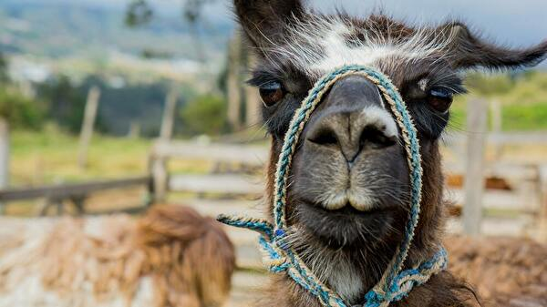

地理と風土
ペルーの国土はコスタ（海岸地帯）、シエラ（山岳地帯）、セルバ（森林地帯）の大きく3つの地域に分けることができます。
コスタ（海岸地帯）
ペルーの太平洋側に面した幅30～50km、長さ約3000kmの海岸砂漠地域です。首都リマはこの海岸に開けています。チャラと呼ばれる気候区分に入り、年間を通じてほとんど雨が降りませんが、東のアンデス山脈から流れ出す川が大都市を潤しています。11~4月の夏は毎日晴天が続きますが、逆に冬はガルーア（garúa）という霧が立ち込めて曇天となる日が多くなります。
海岸砂漠のでき方
海岸砂漠は、中~低緯度地域で、海岸沿いに冷たい寒流が流れているところにできる砂漠です。
冷たい寒流が流れているため、海岸付近の空気は冷やされて水蒸気量が減少します。この空気が海からの風によって陸地に流れてくると、加熱されてさらに低湿になり、砂漠を形成します。そして海岸付近ではときどき乾いた霧が発生します。
シエラ（山岳地帯）
標高2500~3500mのケチュアという気候区分に入るのが、ワラス、クスコ、プーノです。ケチュアを超えると標高3500~4500mのスニと呼ばれる不毛地帯になります。標高が高くなるにつれ平地が少なくなり、急な山の斜面に広がる段々畑では、ジャガイモやキヌアなどが栽培されます。標高が高いため、気温は平均して低く、日中は日差しが強いため気温も上がりますが、朝晩はとても冷え込むのが特徴です。スニの上にはコルディエラ・ネグラ（=黒い山脈）があり、さらに一年中雪をかぶったコルディエラ・ブランカ（=白い山脈）のアンデス山脈へと続きます。この2つの山脈の間はブナ地帯と呼ばれる平地になっていて、リャマやアルパカの遊牧が行われています。

セルバ（森林地帯）
アンデス山脈を越えた東側は気候が一変します。ペルーの国土の約60%を占めるアマゾン熱帯雨林地域です。原生林に覆われ雨が多く、蒸し暑い気候です。平均気温は28℃だが、5~10月の乾季の日中の気温は40℃を超えることも珍しくありません。11~4月の雨季には毎日まとまった雨が降り、高温多湿となります。